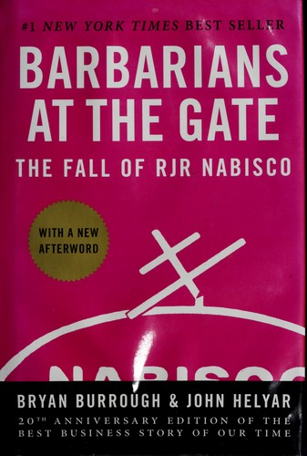

布莱恩·巴勒（Bryan Burrough）与约翰·赫利亚尔（John Helyar）是《华尔街日报》的资深记者。1988年秋，他们亲历了美国商业史上最引人入胜的一幕——烟草与食品巨头RJR纳贝斯克公司的杠杆收购大战。这场历时两个月、最终以250亿美元落槌的并购案，是当时全球有史以来规模最大的杠杆收购交易。凭借在事件中建立的独家采访渠道，两人于1989年将这段历史写成《门口的野蛮人》，由哈珀·柯林斯出版。全书出版后迅速成为《纽约时报》排行榜第一名畅销书，并被广泛认为是迄今为止最出色的商业叙事著作之一。
全书的主角是RJR纳贝斯克的CEO罗斯·约翰逊（Ross Johnson）——一个挥霍无度、喜爱排场、热衷于将公司资源转化为个人特权的管理者。1988年10月，约翰逊突然宣布发起管理层收购（MBO），计划以每股75美元将公司私有化。这一举动打开了潘多拉的盒子：科尔伯格-克拉维斯-罗伯茨（KKR）基金迅速入场，多方竞购随即展开，华尔街最顶尖的投资银行、律师事务所和并购专家悉数登场，围绕这家年营收超过150亿美元的企业展开了一场狂热的财务博弈。两位作者以电影般的笔触，将谈判室中的勾心斗角、华尔街精英的贪婪逻辑与1980年代"贪婪是美德"的时代精神，融汇进这段扣人心弦的历史叙述之中。
《门口的野蛮人》的非凡之处，在于它不是一部干燥的财务分析报告，而是一部节奏紧张、人物鲜活的新闻叙事史。巴勒和赫利亚尔对人物心理与动机的刻画极为细腻，对谈判细节的还原精确而有戏剧张力。书中塑造的形象——从雄心勃勃却缺乏远见的约翰逊，到精于算计、冷静克制的KKR合伙人亨利·克拉维斯——已成为1980年代华尔街并购时代的经典原型。即便对于不熟悉杠杆收购机制的读者，本书也是引人入胜的商业惊悚读物；而对于研究私募股权、公司治理与管理层激励的专业人士，它更是提供了一个无价的真实案例。
《纽约时报书评》称本书为"关于1980年代公司美国与华尔街最精彩、最令人信服的报道之一"（"One of the finest, most compelling accounts of what happened to corporate America and Wall Street in the 1980's"）。《芝加哥论坛报》评论道："很难想象一个更好的故事……也很难想象一部更好的叙述。"（"It's hard to imagine a better story...and it's hard to imagine a better account."）对于希望理解现代并购金融、企业权力结构与商业伦理的读者，《门口的野蛮人》是商业阅读书单上无法缺席的一部经典之作。本书于1993年被HBO改编为同名电视电影，进一步印证了这段历史的持久魅力。